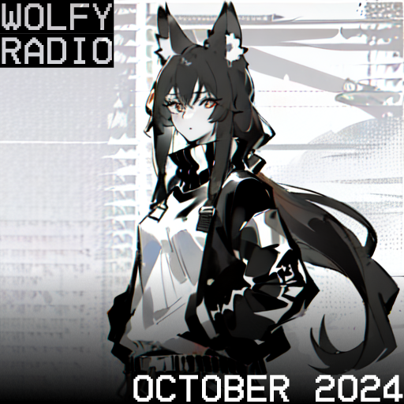

Wolfy Radio October 2024

October 12, 2024
Wolfy Radio is a pet project where I will be showcasing music that I like and try to incorporate it into interesting playlists. The types of playlists will vary from month to month but each playlist will follow some sort of theme. Just to provide some background about myself, I enjoy all kinds of genres but in particular, I love electronic music. To that end, I love comparing and contrasting how artists from various backgrounds create music and how their origin affects the type of music they create.
This month's playlist will be my first ever playlist and to commemorate that I want to create a playlist that showcases various genres and seamlessly transitions between them. This does mean that the playlist is designed with the intent that you listen to it unshuffled. If you are using Spotify to listen to my playlist I would recommend that you turn on the crossfade feature and set it to 6 seconds. If you need a guide on how to do that please click on the link here. Unfortunately for people using the YouTube playlist, there is no way to crossfade between the songs on the playlist but regardless I wanted to provide it for anyone that didn't use Spotify.
Playlists
Fire | Magic City Hippies | Alternative
I want to kick off this playlist with a very upbeat feel-good track. Using a capella and whistling throughout keeps the track feeling down to earth. The lyrics describe the turbulence of life and are complemented by the instrumental never sticking to one genre. This song is perfect for getting ready for work in the morning. Despite being an older song having come out in 2013, I only recently discovered it and I haven't been able to get enough.
Good Luck, Babe! | Chappell Roan | Synth Pop
I'm usually not a fan of music on the radio since they usually just repeat songs to complete and utter death but this song completely caught me off guard. Chappell Roan is a talented singer but hats off to Daniel Nigro and Justin Tranter who are the songwriters for this track cause the lyrics are outstanding. This song feels like a throwback reminding me of bands like Wham! (Instrumentals) and The Cardigans (Lyrics). Also the line "You have to stop the world just to stop the feeling" simply goes hard and I can foresee some breakcore songs sampling this (if they haven't already). Not to mention I'm a sucker for when the lyrics in the chorus get more pronounced as the song goes on. All in all this song is a banger and probably one of my favorite songs to top the charts recently.
My Ordinary Life | The Living Tombstone | Pop Rap / Electropop
The lyrics depict an artist losing touch with reality as he becomes famous despite that, the instrumental is pretty cheerful and upbeat. A fun fact about the instrumental is that it is sampled from the song "Koigokoro Wa Dangan Mo Yawarakakusuru" from the Nichijou OST. I couldn't find relevance between the sample and track from a story perspective or even in the name which roughly translates to "Even the bullets of love become softer" (not really applicable to this song). The Living Tombstone loves to make very bassy songs and this song does not stray from that formula with this one. The singer Sam Haft does a good job of using different vocal tones for the verses and choruses and I especially love the outro where they change up the lyrics for the chorus, almost as if the singer has accepted his fate.
This Time of Morning (Mikey B Remix) | Mikey B, Local | UK Garage
Fundamentally, this song is very simple containing consistent percussion and soft chimes and bells that never take the show but instead aim to compliment the lyrics. I have only recently become familiar with UK Garage but this genre is really interesting. It goes easy on the synths and bass unlike traditional EDM and instead focuses on the percussion sampling together different breaks. Local's lyrics have a nice flow and consistently hit which allow him to keep up with the beat. This song conveys the vibe of leaving a party when it's so late you see the sun rising perfectly.
VHS Rave | Swimming Paul, Tiesto | Stutter house
Back to back British singers I swear I'm not biased. This track makes use of a more modern sub genre of house called stutter house. I have listened to the original and I have to say the Tiesto remix edges out the original because it omits the ending where Swimming Paul is thanking his friends (It's a minute and 10 seconds long like relax dude). It just feels out of place when listening to the song on its own. This is a more mellow track with bittersweet lyrics depicting the singer going through a breakup. I especially love the line "I swear that I mean it I'm done with these girls". The way he says makes it obvious he is only saying this out of frustration even though he knows he doesn't believe it.
Battery 2 | shirobeats, Ironmouse, McGwire, Oricadia, Kiwwi, pdr dax | EDM
This is by far my favorite song on the playlist this month. So many different artists coming together and yet I feel that the overall vision is maintained. I think every singer got their opportunity to shine with their verses. I already knew Ironmouse was a good singer but I haven't heard of Oricadia or McGwire but both these singers did an excellent job. The electronic intermissions are stellar and I love the Latin influence and I'm not just talking about the lyrics. Multiple times throughout the song they incorporate Latin club beats into the electronic sections. I am a sucker for musical progression and I adore the very end where they bring all the singers together for the final chorus.
Basement Dreamer | GnB Chili | Drum and Bass / Breakcore
I firmly believe the breakcore genre is underrated and any chance I get to slip a track in here I will. This song samples the track "Must Be Dreaming" by Frou Frou the original song has a surreal feeling and Basement Dreamer feels like a natural evolution to the original. It all starts with the beginning of the track. The use of the high pass filter brings down the feeling only for it to explode with distorted synths and layered breaks. I adore the way this track conveys a surreal feeling comparable to zoning out thinking about nothing.
Dozing Off Again... (House Edit) | Starjunk 95 | Future Bass / House
Starjunk 95's main genre is future funk and you can feel that with how he incorporates little sound effects and voice clips into his music. At times this song almost gives off synthwave vibes but then it comes right back to the house vibe. I love the use of the phone jingles and voice glitching to really emphasize the vibe of falling asleep in an office. This will not be the last time you hear Starjunk's music I will most likely include more of his songs in future playlists as I love the way his music flows.
Without You | MG5902, bao huy | Future Bass
This song is truly a hidden gem with less than 50,000 listens on Spotify. This song definitely needs more recognition with a catchy verse and an upbeat drop. I will be keeping an eye on this artist because the song slaps. There is a very strong Asian influence with this song pulling a lot from future bass. I'm also partial to how the bridges are brought back with the sax and piano and the duet that forms between the synths and vocals in the second drop. Overall, a very bubbly song with good vibes. What more can you ask for?
Whole | Chime, Adam Tell | Dubstep
I'm reeling it back with this one a more traditional electronic track. Whole tells the story of breaking away from monotony and marching to the beat of your own drum. The emotional lyrics combined with heavy drums create a vibrant drop that gives off a cathartic feeling. Comparing life to a race and pleading with the listener to just go out and chase their dreams. This track feels like it was inspired by racing game soundtracks with its change of speed throughout the track almost emulating the twists and turns on a race track.
Have It All | Vikkstar, RetroVision, Dyson | EDM
The drop of this song has RetroVision written all over it with how he lets the drop go without any percussion for the first loop. RetroVision is one of my favorite EDM artists. His tracks are never boring and always bring life to the party. Dyson brings a good energy to the track providing a potent energy to the build up and amplifying the overall feel of the track. The only downside with RetroVision tracks is that you simply do not get the full experience if you do not have headphones or speakers with a solid bass.
Dilemma | Pixel Terror, Dyson | Drumstep
I didn't mean to do this but we got two Dyson songs back to back. She is a very good singer for high energy, high bass tracks. I am personally unfamiliar with Pixel Terror but this drumstep (drum and bass combined with dubstep) track might make me become a fan because I can't get enough of the way they incorporate the vocals into the drop. Similar to the last track feeling the bass will definitely improve your experience with this track. I like comparing how different electronic artists use their vocalist's talents and I find it interesting even in the same genre artists will always find a way to add their own flavor to the voice they are working with. For example, Pixel Terror likes to splice up the vocals to incorporate them into the drop while RetroVision tends to predominantly keep the vocals to bridge and build-up. If you dig deeper into Japanese EDM they tend to sample the same exact vocals so with them you can really feel different artists choose to use lyrics.
For You | Hiyo | Drumstep
Despite the Japanese origins of this song and the fact that it came out in 2023, it is heavily reminiscent of the mid-2010s Monstercat and I honestly never would have guessed it. This song is another drumstep track and feels like a throwback making me nostalgic for the Main series Monstercat albums. I grew up listening to the Monstercat albums which helped me discover my love for EDM, Dubstep, and various other electronic subgenres. Even though Monstercat has strayed away from their mashup albums I have found various other groups that still keep the trend going. This song comes from a mashup album called Stream Palette and this is one of my favorite ways to discover new songs as they act like a sampler platter giving you a taste of various artists all in one album.
Satellite | siqlo | J-Core
Now this song is J-Core and a contest winner from one of my favorite Japanese music groups Hardcore Tano-C. One of my favorite things unique to mostly Japanese EDM producers is the fact that they will always fake you out with the first build-up. I could see how it could annoy some people but this type of song composition is very unique and differs greatly from your traditional EDM. This fake-out also amplifies the actual drop once you do get there. I feel like a lot of artists fall into the trap of not properly building up to their drop leaving you unsatisfied. The build-up is just as important as the drop. Despite not being popular in the traditional music scene Siqlo is well known in the realm of rhythm games with him having an extensive discography on these games. Unfortunately, Japanese companies are reluctant to release these rhythm game songs to any official music streaming service so most people will be left in the dark.
Story Of My Life (feat. Sueco and Trippie Redd) Riot Remix | ILLENIUM, Trippie Redd, RIOT, Sueco | Hardcore
This track mashes together so many different genres but it all comes together in unison and works together to heighten the track. Emo, Metal, Hardcore, Dubstep. I am familiar with RIOT's work and he commonly likes mashing together Metal and Hardcore but with the lyrics, he gets to work with here and the foundation left by ILLENIUM is just a perfect concoction. The drop comes in hard and doesn't let up a true headbanger through and through.
Duality | Slipknot | Nu Metal
I doubt this will be many people's first time hearing this song but I think it was a perfect inclusion especially as we are coming up to the end of this month's playlist and entering the metal part of it. Duality is classic with Slipknot being one of the first bands to popularize Nu Metal. I love the emotion brought forward by the track and its increasing intensity as the singer loses his mind. The dichotomy between the calm verses and the screaming choruses and bridges shows off the "Duality" of the singer. This song brings the rage and has a firm spot in my workout playlist.
The Only Thing I Know For Real (Maniac Agenda Mix) | Tyson Yen | Electronic Rock / Heavy Metal
The entire soundtrack for the game Metal Gear Rising Revengeance is spectacular and that is reflected with the least popular song on the album being just shy of a million listens. The fact that they were able to get this many different artists together and each of them got an opportunity to play to their strengths. This track intertwines with the story of the game but all you need to know is the character in question is a mercenary who fights for the thrill of it. He holds no allegiances and the only thing he pursues is his next fight to the point of helping the main character discover himself before ultimately getting defeated by him. To that end, I believe this song does a good job of portraying this character through the lyrics and the instrumental. I believe the lyrics are pretty self-explanatory but I want to point out some of the less obvious allusions. The instrumental during the introductory verse combines a lot of different elements but in the beginning, it almost feels like guitar, drums, and electronic synths/effects are fighting for their turn in the song. I believe this is reflective of the inner turmoil presented in the lyrics. However, this completely changes once we reach the chorus where everything becomes more organized, and a back-and-forth is established between the guitar and the electronic synths. Again, this change in instrumental is congruent with the change in the lyrics where the singer describes the only thing that brings him fulfillment. My only complaint with this song is that I wish that it was longer and potentially had another verse. Anyways, the high energy this song brings as well as the fast-paced percussions makes it another worthy inclusion to this playlist.
Love the Subhuman Self | Aisha, Jamison Boaz | Metal
Guilty Gear Strive has one of the best soundtracks I have heard from a game and I am dumbfounded by how they managed to give every single character in this game their very own full-fledged theme. Daisuke Ishiwatari the director of the game and main composer for almost every song in the soundtrack wears his metal and rock inspirations on his sleeve. This song is predominantly metal but it does differentiate itself by making use of the synths and piano during key parts of the song. Aisha's clean singing paired with the harsh vocals of Jamison Boaz creates an interesting dynamic where the character must come to accept all parts of herself.
Well, we made it to the end. To anyone who took the time to read this through to the end, let this be my personal thank you. I love music and creating playlists is my way of sharing my passion. I hope you enjoyed the listen and come back for next month. This website is very bare bones at the moment but I will work on improving it as I go and potentially add more content. Unfortunately, this is a static site at the moment so incorporating a system for comments is a little troublesome but if you want to make any comments or critiques feel free to contact me at wolfydelta@protonmail.com